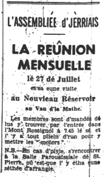

Rêunion Mensuelle

Vendrédi au sé, l'27 dé Juillet, à bein près eune chentaine dé membres lus rêunîtent au nouvieau rêservoir. Ch'tait magnifique dé l'vaie dé sus l'haut, et en même temps d'vaie la belle vallée où-est qu'il est situé.
Lé Sieur R. Burrow fit la beinv'nue ès membres et dit qué v'là tchi li faîthait grand pliaîsi d'pouver montrer l's alentours là, et auprès l'Sieur A. Ramsay donnit tchiques bein întérêssants détails du travas fait jusqu'à ch't heu'. Parmi d'autre chiffres, i' nos dit qué l'carré couvert d'ieau 'tait 56 vrégies, et que l'rêservoir pouvait t'nîn 210,000,000 gallons d'ieau - eune bouanne quantité en cas d'secraiche!
Auprès l'discours les gens d'valîdent au bas d'la grand muthaille, et l's affaithes eudrent lieu dehors. Les rapports du mais d'Mai et du Service Annuel fûdrent approuvés et sept nouvieaux membres fûdrent êlus. Lé Président annoncit l'excursion à Arromanches lé 17 d'Août, et dit ès membres dé n'oublier pas à donner lus noms au Trésôryi ou à la Ségrétaithes par lé 10 au pus tard.
Les membres futent vaie les pompes dans l'neu bâtisse, et auprès dans l'apparteinment iouqu' les travaillieurs mangent pour vaie des portraits et dé difféthentes choses trouvées dans l'couothant du travas. La niet vînt acouo bein vite et l'Président ermercyit l'Sieur Burrow pour nos aver si bein erchus et pour tout s'n embarras, lé Sieur Ramsay pour ses magnifiques explications et l'Sieur Mountfort pour sen aide. Lé Sieur Ramsay ermercyit l'Sieur Gibaut en patois, et dit qué ch'avait 'té un pliaîsi d'aver des vrais Jèrriais avec ieux à vaie lus travas.
1962
Viyiz étout: